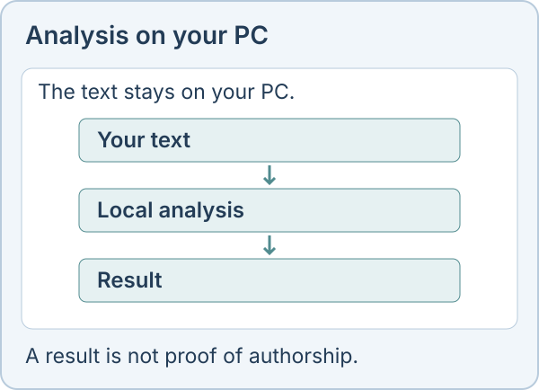

Offline AI text detector for Windows
Linda checks a text on your own computer, so the text is not uploaded for detection. It covers English, Polish and Russian, highlights passages worth a closer look and saves a PDF report. A score is never proof of who wrote something.

Two models
Loupe is the compact detector and provides a CPU option. Assay uses the larger ensemble. Model downloads require internet and disk space; hardware suitability is checked in the app.
How well it works
These are our own measurements, not an independent audit. Assay flagged 81.0% of 1,675 texts rewritten by 16 humanizer tools and 95.5% of texts from three unseen generators. On non-native TOEFL essays it wrongly flagged 5.5% of human texts, and Loupe 2.2%. We have not established a current, like-for-like comparison with Pangram.
Offline does not mean certain
False alarms happen, and a low score does not show that no AI was used. Never base a decision about a person on the score alone. The online demo is separate and sends your text to a server, so use the desktop app for confidential texts.
Price
Free for personal, non-commercial use. A commercial licence costs $10 once for one person, $30 once for up to 10 people, or $500 a year for an organization.